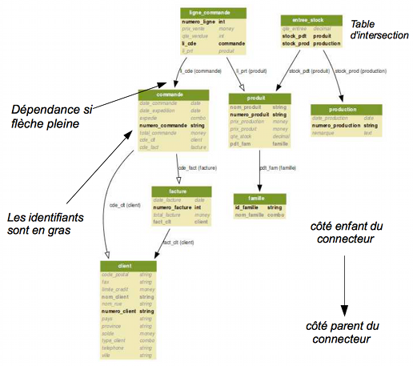

Démarche et pratique du prototypage
Concevoir le modèle conceptuel de données.
- Entité/Association
- Relationnel - conceptuel et non Relationnel - logique

Figure 31 : modèle conceptuel de données.
Entrer le modèle dans l’application du prototypeur
- Entités, attributs et relations parent-enfant
- Afficher la vue graphique
- Générer les formulaires pour chaque table du modèle
Alimenter des valeurs dans les entités
Concevoir l’application
- Choisir les entités
- Effectuer les absortions
- Composer les formulaires parent-enfant